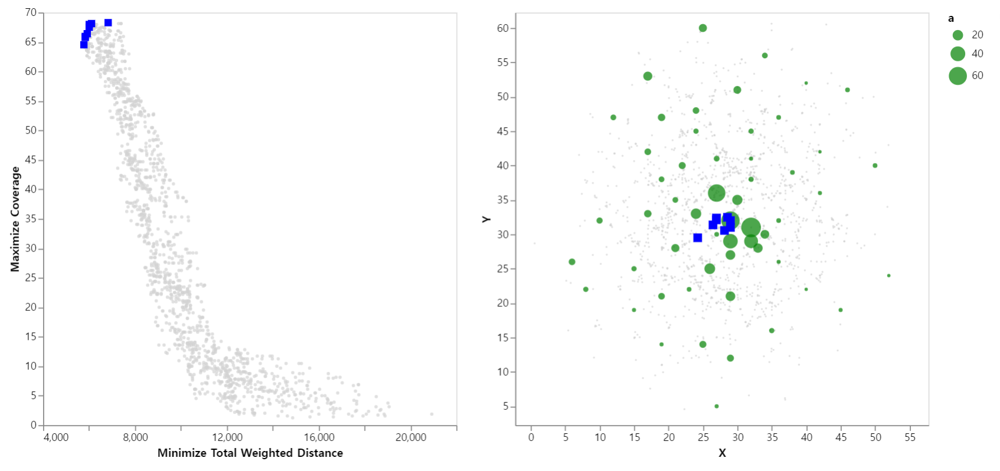
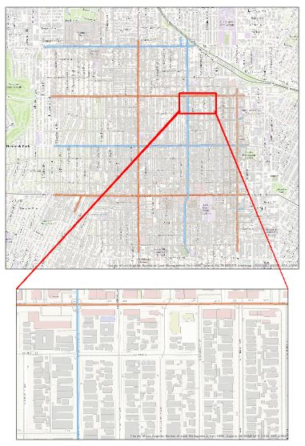

Portfolio
Contents
- 3D Map Features and Spatial Modeling
- 1.1. 3d Acoustic Propagation Modeling (ongoing)
- 1.2. lab project: LIDAR
- Javascript Map API and Web Building
- 2.1. Location based Theater and Movie finder
- Python Visualization and Spatial Optimization
- 3.1. Fire Evacuation Maps (ongoing)
- 3.2. Interactive map of Pareto Optimal solutions
- 3.3. Finding Optimal Locations of Street Lights in LA
- Spatial Statistical Analysis
- 4.1. GWR, Spatio-temporal Krigging, and Spline on Air Pollutants from Remote Sensed Data
- 4.2. 2016 Election data analysis
1. 3D Map Features and Spatial Modeling
1.1. 3d Acoustic Propagation Modeling
- presentation
- sourcecode : The sourcecode relies on arcpy module. The ipynb file should be operated within ArcGIS Pro, as an inserted Notebook.
On the importance of sentence length
This sentence has five words. Here are five more words. Five-word sentences are fine. But several together bocome monotonous. Listen to what is happening. The writing is getting boring. The sound of it drones. It’s like a stuck record. The ear demands some variety.
Now listen. I vary the sentence length, and I create music. Music. The writing sings. It has a pleasent rhythm, a lilt, a harmony. I use short sentences. And I use sentences of medium length. And sometimes when I am certain the reader is rested, I will engage him with a sentence of considerable length, a sentence that burns with energy and builds with all the impetus of a crescendo, the roll of the drums, the crash of the cymbals – sounds that say listen to this, it is important.
- Gary Provost (100 Ways to Improve Your Writing, 1985)

3d buildings

3dmap

model
result
2. Javascript Map API and Web Building
2.1. Location based Theater and Movie finder
[Team project]
On the importance of sentence length
This sentence has five words. Here are five more words. Five-word sentences are fine. But several together bocome monotonous. Listen to what is happening. The writing is getting boring. The sound of it drones. It’s like a stuck record. The ear demands some variety.
Now listen. I vary the sentence length, and I create music. Music. The writing sings. It has a pleasent rhythm, a lilt, a harmony. I use short sentences. And I use sentences of medium length. And sometimes when I am certain the reader is rested, I will engage him with a sentence of considerable length, a sentence that burns with energy and builds with all the impetus of a crescendo, the roll of the drums, the crash of the cymbals – sounds that say listen to this, it is important.
- Gary Provost (100 Ways to Improve Your Writing, 1985)
3. Python Visualization and Spatial Optimization
3.1. Fire Evacuation Maps
On the importance of sentence length
This sentence has five words. Here are five more words. Five-word sentences are fine. But several together bocome monotonous. Listen to what is happening. The writing is getting boring. The sound of it drones. It’s like a stuck record. The ear demands some variety.
Now listen. I vary the sentence length, and I create music. Music. The writing sings. It has a pleasent rhythm, a lilt, a harmony. I use short sentences. And I use sentences of medium length. And sometimes when I am certain the reader is rested, I will engage him with a sentence of considerable length, a sentence that burns with energy and builds with all the impetus of a crescendo, the roll of the drums, the crash of the cymbals – sounds that say listen to this, it is important.
- Gary Provost (100 Ways to Improve Your Writing, 1985)

network processing

3.2. Interactive map of Pareto Optimal solutions
On the importance of sentence length
This sentence has five words. Here are five more words. Five-word sentences are fine. But several together bocome monotonous. Listen to what is happening. The writing is getting boring. The sound of it drones. It’s like a stuck record. The ear demands some variety.
Now listen. I vary the sentence length, and I create music. Music. The writing sings. It has a pleasent rhythm, a lilt, a harmony. I use short sentences. And I use sentences of medium length. And sometimes when I am certain the reader is rested, I will engage him with a sentence of considerable length, a sentence that burns with energy and builds with all the impetus of a crescendo, the roll of the drums, the crash of the cymbals – sounds that say listen to this, it is important.
- Gary Provost (100 Ways to Improve Your Writing, 1985)
] ]
3.3. Finding Optimal Locations of Street Lights in LA
Interactive maps can be found within the sourcecode
On the importance of sentence length
This sentence has five words. Here are five more words. Five-word sentences are fine. But several together bocome monotonous. Listen to what is happening. The writing is getting boring. The sound of it drones. It’s like a stuck record. The ear demands some variety.
Now listen. I vary the sentence length, and I create music. Music. The writing sings. It has a pleasent rhythm, a lilt, a harmony. I use short sentences. And I use sentences of medium length. And sometimes when I am certain the reader is rested, I will engage him with a sentence of considerable length, a sentence that burns with energy and builds with all the impetus of a crescendo, the roll of the drums, the crash of the cymbals – sounds that say listen to this, it is important.
- Gary Provost (100 Ways to Improve Your Writing, 1985)
 
Detailed explanation with the sourcecodes can be found within the video below.
4. Spatial Statistical Analysis
4.1. GWR and Spline on Air Pollutants from Remote Sensed Data
[Team project]
On the importance of sentence length
This sentence has five words. Here are five more words. Five-word sentences are fine. But several together bocome monotonous. Listen to what is happening. The writing is getting boring. The sound of it drones. It’s like a stuck record. The ear demands some variety.
Now listen. I vary the sentence length, and I create music. Music. The writing sings. It has a pleasent rhythm, a lilt, a harmony. I use short sentences. And I use sentences of medium length. And sometimes when I am certain the reader is rested, I will engage him with a sentence of considerable length, a sentence that burns with energy and builds with all the impetus of a crescendo, the roll of the drums, the crash of the cymbals – sounds that say listen to this, it is important.
- Gary Provost (100 Ways to Improve Your Writing, 1985)


4.2. 2016 Election data analysis
[Team project]
On the importance of sentence length
This sentence has five words. Here are five more words. Five-word sentences are fine. But several together bocome monotonous. Listen to what is happening. The writing is getting boring. The sound of it drones. It’s like a stuck record. The ear demands some variety.
Now listen. I vary the sentence length, and I create music. Music. The writing sings. It has a pleasent rhythm, a lilt, a harmony. I use short sentences. And I use sentences of medium length. And sometimes when I am certain the reader is rested, I will engage him with a sentence of considerable length, a sentence that burns with energy and builds with all the impetus of a crescendo, the roll of the drums, the crash of the cymbals – sounds that say listen to this, it is important.
- Gary Provost (100 Ways to Improve Your Writing, 1985)